Отступление второе. Из пушки – на Луну!
Кто из нас в детстве не зачитывался романами замечательного французского писателя-фантаста Жюля Верна? Листая пухлые тома, мы вместе с его героями погружались в пучины Мирового океана, покоряли воздушные просторы, стремились к Северному полюсу, исследовали Таинственный остров. С полным правом можно сказать, что, не выходя из дома, мы побывали во всех уголках земного шара и даже на других планетах.
Большая часть того, что во второй половине XIX века «напророчил» великий писатель, стало реальностью сегодняшних дней и уже мало кого удивляет. Но и в его творчестве еще есть «непричесанные техническим прогрессом» идеи. Некоторые проекты по-прежнему не реализованы и, может быть, останутся таковыми навсегда.
Но в этой главе нас будет интересовать только один роман француза и, соответственно, только одна идея, которая впоследствии получила развитие, но была завершена. Хотя попытки воплотить ее в реальность не прекращаются до сих пор.
В 1865 году Жюль Верн опубликовал роман ««С Земли на Луну прямым путем за 97 часов 20 минут». Если помните, – а я не сомневаюсь, что этот роман читали практически все, – его герои отправились в свое межпланетное путешествие внутри снаряда, который был послан из гигантской пушки, установленной на американском континенте в штате Флорида.
Нет ничего удивительного в том, что в докосмическую эру писатели, да и не только они, предлагали самые фантастические способы для отправки людей в просторы Вселенной. Как правило, это были настолько абсурдные идеи, что сейчас лишь литературоведы могут вспомнить о них. Да и то, если они специально занимаются творчеством данного писателя. Ну и историки, занимающиеся вопросами развития техники.
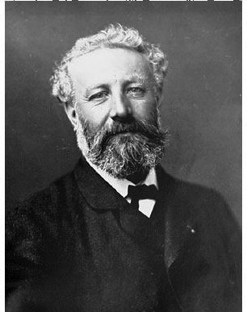
Жюль Верн
Однако в случае с жюльверновской пушкой есть три довольно существенных момента, отличающих эту писательскую выдумку от многих других.
Во-первых, этот весьма оригинальный способ достижения космических просторов был предложен не самим Жюлем Верном. И даже не его «коллегами по цеху», которые описывали нечто подобное еще в XVII и в начале XVIII веков.
По свидетельству историка космонавтики Ари Штернфельда, еще в середине XVII века французы Мерсенн и Пти провели эксперимент, выстрелив из пушки (не гигантского орудия, а обыкновенной пушки того времени) прямо вверх, чтобы узнать, упадет ли при этом снаряд обратно на землю. Все выпущенные исследователями снаряды бесследно исчезли. На самом деле они упали не рядом с экспериментаторами, а чуть в стороне. Однако французы решили, что снаряды улетели в космическое пространство. Сейчас им можно простить такую ошибку. Тем более что именно она стала той отправной точкой, которая заставила Исаака Ньютона всерьез задуматься над проблемой притяжения тел к земной поверхности и впоследствии сформулировать закон всемирного тяготения.
Кстати, именно этот великий английский физик и стал автором идеи о достижении космического пространства с помощью артиллерийских орудий. Причем не умозрительно, а вполне конкретно. В 1687 году он опубликовал капитальный труд «Математические начала натуральной философии». Среди прочего там была описана установленная на высокой горе пушка, с помощью которой предполагалось выводить на орбиту вокруг Земли снаряды. Правда, гора должна была быть настолько высокой, чтобы ее вершина сама находилась в космическом пространстве. Но это уже нюансы.
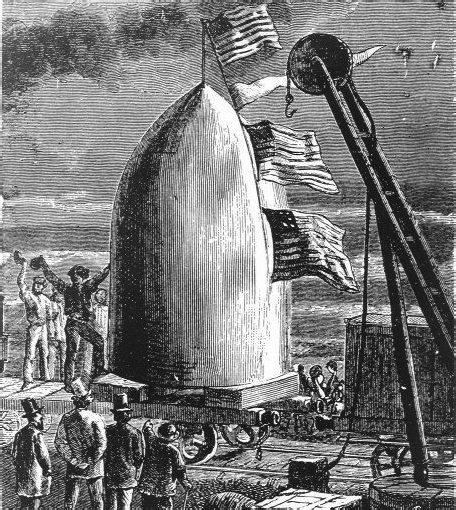
Иллюстрация к роману Жюль Верна «Из пушки на Луну»
Во-вторых, в отличие от своих предшественников, Жюль Верн привел в своем романе точные технические параметры орудия, которое выстреливало пилотируемый снаряд в сторону Луны. Пушка должна была иметь, по расчетам писателя, длину 274 метра и диаметр 2,74 метра. Первые 61 метр длины ствола заполнялись взрывчатым веществом весом в 122 тонны. Снаряд выстреливался со скоростью 16,5 километра в секунду. После прохождения земной атмосферы, где происходило торможение аппарата, он начинал двигаться со скоростью 11 километров в секунду, что было достаточно для полета к естественному спутнику Земли.
Сам снаряд Жюль Верн предложил изготовить из алюминия с толщиной стенок до 30 сантиметров. Перегрузки, которые пассажиры испытывали при выстреле и при торможении, компенсировались амортизаторами.
Фантастично? Да. И вряд ли реализуемо, если в точности копировать приведенное в романе описание. Но, с другой стороны, все математически точно и логично. И хотя в своих расчетах писатель допустил некоторые ошибки, в целом его выводы о возможности использования орудий для доставки грузов в космос были верны.
И наконец, в-третьих, работая над романом, Жюль Верн и представить себе не мог, что менее чем через сто лет его идею попытаются воплотить в жизнь. Правда, не для полета к Луне, а для решения иных задач, в числе которых значился и вывод в космос искусственных спутников Земли. То есть почти так, как это изначально предложил сэр Ньютон.
Но не буду забегать вперед и расскажу обо всем по порядку. В том числе и о тех работах, которые напрямую с космосом не были связаны, но являлись определенным шагом в этом направлении. Это нужно, чтобы картина была полная, и было понятно, как и когда происходили трансформации «земных проблем» в «космические проблемы».
Как вообще характерно для ХХ века, первыми созданием гигантских орудий озадачились военные. Цели у них были при этом вполне конкретные – увеличить дальность стрельбы и использовать тяжелые боеприпасы для уничтожения укреплений противника.
Исаак Ньютон
Еще в годы Первой мировой войны в Германии была построена огромная пушка, которую окрестили «Кайзер Вильгельм», хотя больше она известна под именем «Большая Берта». Иногда ее называют «Парижской пушкой» и «Длинным Максом». Орудие имело калибр 420 миллиметров, длину ствола 34 метра, а весило 125 тонн. Снаряд весом 120 килограммов выстреливался на расстояние 131 километр. При этом максимальная высота подъема снаряда составляла 40 километров. Огромная цифра! Выше смогла подняться только спустя 30 лет немецкая же ракета «Фау-2». Обслуживал орудие расчет из 285 человек.
Первые выстрелы «Большая Берта» сделала по Парижу 23 марта 1918 года. За пять последующих месяцев был произведен 351 выстрел по французской столице, в результате чего было убито 256 человек, а 620 парижан получили ранения. С военной точки зрения эффект был минимален, но психологически «Большая Берта» воздействовала на противника достаточно убедительно.
Как известно, немцы проиграли Первую мировую войну. «Большая Берта» была уничтожена, чтобы не досталась врагу.
Более десятка лет в Германии не задавались вопросом создания артиллерийских монстров. Зато на первый план вышли аналогичные или схожие разработки с мирным уклоном.
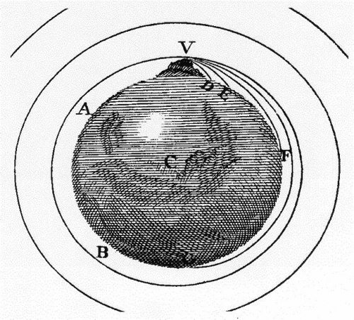
Рисунок Исаака Ньютона, иллюстрирующий возможность запуска артиллерийского снаряда на орбиту вокруг Земли
В 1920-х годах, под впечатлением идей Жюля Верна и в стремлении исправить допущенные им ошибки в расчетах, немецкие ученые Макс Валье и Герман Оберт предложили свой проект применения гигантских орудий для достижения космоса. Они намеревались выстрелить в сторону Луны снарядом длиной 7,2 метра и диаметром 1,2 метра. Изготовить снаряд предполагалось из стали с примесью вольфрама. Однако расчеты показали, что для реализации идеи Валье и Оберта требовался ствол длиной 900 метров. Да и то, если применять в нем самый совершенный на тот момент пороховой заряд. Чтобы минимизировать потерю скорости при прохождении через земную атмосферу, ствол предполагалось разместить внутри горы на высоте почти пять километров. Дальше расчетов и подготовительных работ дело не пошло.
Но идея многим показалась привлекательной, и в 1928 году Вилли Лей и барон Гвидо фон Пирке предложили свой вариант пушки для космоса. Они предполагали установить орудие на большей высоте, чем это было прописано в проекте Валье и Обе-рта – 6100 метров, а также снабдить снаряд собственным двигателем, что увеличивало бы скорость его движения. Такое орудие было уже ближе к ракете, чем к артиллерийскому орудию. Но и этот проект своего развития не получил.
С середины 1930-х годов в Германии возобновились работы по созданию гигантских боевых систем. Работы, напрямую не связанные с подготовкой войны, либо ушли на второй план, либо вообще были позабыты и позаброшены. Вместо пушки Валье-Оберта были построены и даже ограниченно использовались в ходе боевых действий гигантские орудия «Дора» и «Густав».
Эти пушки, с одной стороны, были похожи на «Большую Берту». А с другой стороны, это был качественно новый шаг в оружейном деле. Что и следовало ожидать – все-таки прошло двадцать лет, в течение которых техника развивалась очень бурно.
Основным отличием «Доры» и «Густава» от прародительницы был калибр – 807 миллиметров. Ну и, естественно, габариты. Это позволило увеличить вес снаряда до 7100 килограммов в бетонобойном исполнении и до 4800 килограммов в фугасном исполнении. При этом дальность стрельбы возросла до 165 километров.
Для обеспечения возможности перевозки орудия по железной дороге оно состояло из нескольких основных частей, которые транспортировались по отдельности на специальных железнодорожных платформах. На боевой позиции эти фрагменты соединялись на специальном лафете, который перемещался по двум колеям, разнесенным на 6 метров.
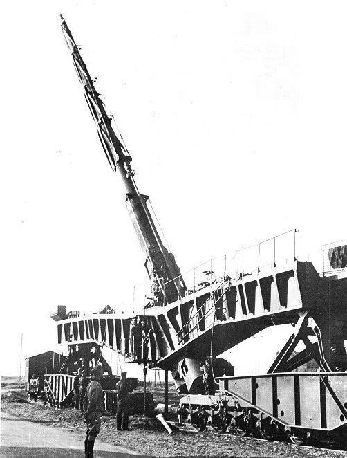
Пушка «Большая Берта»
Немцы строили «Дору» и «Густава» для прорыва французской линии Мажино. Еще до того, как изготовление пушек было завершено, Франция капитулировала, поэтому впервые артиллерийские монстры были применены через год после начала войны с Советским Союзом.
В начале 1942 года «Дору» перебросили в Крым. Орудие предполагалось использовать при штурме Севастополя. Артиллерийская установка была столь огромной, что для ее обслуживания была сформирована воинская часть со штатной численностью 500 человек.
Транспортировка «Большой Берты»
Огневая позиция была выбрана в районе поселка Дуванкой. Ее подготовка велась несколько месяцев, для чего были привлечены несколько тысяч саперов и рабочих, принудительно мобилизованных из числа местных жителей. Построили даже специальную железнодорожную ветку протяженностью 16 километров, чтобы доставлять на батарею боеприпасы. После окончания подготовительных работ на позицию были поданы основные части пушки, и началась ее сборка, продолжавшаяся неделю. Летом 1942 года пушка открыла огонь по Севастополю, но эффект от ее применения был незначителен. Лишь одно попадание можно считать успешным – когда взорвался склад боеприпасов Черноморского флота, находившийся на глубине 27 метров. В остальных случаях снаряд пушки, проникая в грунт, пробивал круглый ствол диаметром около 1 метра и глубиной до 12 метров.
После взятия немцами Севастополя «Дору» перевезли под Ленинград и разместили в районе станции Тайцы. Сюда же было доставлено орудие «Густав», сборка которого была закончена в начале 1943 года. Но начать обстрел города эти суперпушки не успели – началась операция по прорыву блокады Ленинграда, и оба орудия были срочно эвакуированы в Баварию, где в апреле 1945 года их взорвали при приближении американских войск.
Как видим, значительного следа «Дора» и «Густав» в истории Второй мировой войны не оставили. И это к нашему с вами счастью.
Был в нацистской Германии и еще один проект создания суперпушки – проект «Фау-3». Он почти не известен не только широкой публике, но и историкам. Частенько это название применяют для баллистических ракет, которые Вернер фон Браун конструировал для обстрела американского континента. На самом же деле это обозначение в документах Третьего рейха было дано гигантскому артиллерийскому орудию из серии «оружия возмездия».
Эта пушка должна была иметь ствол длиной 140 метров. Принцип ее действия был прост и эффективен: по мере прохождения по длинному стволу пушки снаряд через каждые два метра получал новый импульс за счет подрыва ускорителей. В результате этого 140-килограммовые снаряды могли выстреливаться на дальность до 165 километров. Изготовление пушки велось на заводах в Сааре, а установить ее предполагалось на западном побережье Франции, где началось сооружение гигантского бункера. Но завершить строительство немцы не успели. Сначала помехи создавали регулярные бомбардировки союзной авиации, а летом 1944 года этот район был занят английскими и американскими войсками. Тем не менее на побережье Балтийского моря удалось провести испытательную стрельбу на дальность 140 километров.
Когда стало ясно, что изготовить и применить полномасштабную версию «Фау-3» немцы не успевают, руководство рейха санкционировало производство двух орудий со стволом длиной 45 метров. Укороченная версия была установлена в декабре 1944 года близ города Руверталь неподалеку от Трира. И была обращена против Люксембурга, занятого американскими войсками. В последующие недели «Фау-3» выпустила по войскам союзников 183 снаряда 155-миллиметрового калибра. Результат оказался удручающим для конструкторов суперпушки: на расстоянии 42 километров разброс снарядов составил до четырех километров. В результате обстрелов погибли десять человек. Резюме экспертов было следующим: «С технической точки зрения – блестяще, с моральной – сомнительно, с военной – бесполезно». Таким образом, «Фау-3», как и самолеты-снаряды «Фау-1», и ракеты «Фау-2», погоды в войне сделать не успели.
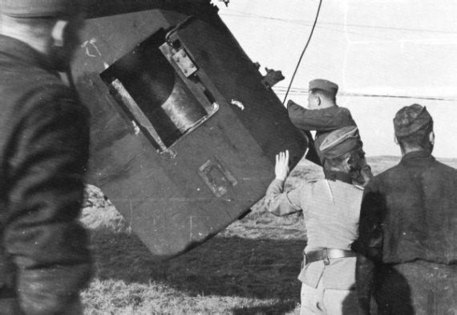
«Большая Берта» готовится к стрельбе
Все, что я написал до этого момента, было своеобразным введением в тему, так как идеи Ньютона и Верна, а также немецкие разработки, к американской космонавтике отношения не имели. Ну разве что французский фантаст выбрал местом установки своей пушки один из южных штатов США. А вот работы, которые велись после окончания Второй мировой войны, уже напрямую связаны с Новым Светом. Хотя и инициировал их не американец.
В конце 1950-х годов бельгиец Джеральд Бюлль (Gerald Bull), работавший в то время директором канадского института космических исследований, вновь вспомнил о проекте Жюля Верна и предложил использовать мощные пушки для запуска на околоземную орбиту снарядов-спутников. Этой идеей заинтересовались военные США и Канады, в результате чего родилась совместная военная программа двух стран HARP (High Altitude Research Program – программа исследований на больших высотах).
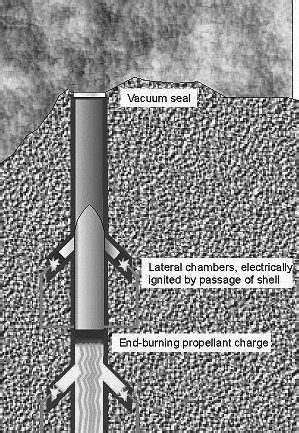
Пушка Валье-Оберта
Джеральд Бюлль родился в 1928 году в канадской провинции Онтарио. Детство будущего творца гигантских орудий было безрадостным. Он рано потерял мать, отец ушел в другую семью, а маленький Джеральд воспитывался в семье своей тети. Единственной отрадой для него стала школа, где впервые и стали проявляться его инженерные способности. Потом был университет в Торонто, который он успешно закончил в 1951 году.
В тот момент Бюлль представлял собой внешне типичный образец молодого ученого, которого больше интересовали формулы, нежели радости жизни – худой, бледный, но с огромным желанием работать. После университета он попал на работу в канадский центр перспективных вооружений, где в тот момент находились многие трофеи, попавшие в руки союзников в ходе Второй мировой войны. Знакомство с достижениями нацистов (а там было на что посмотреть), вероятно, и стало основой для рождения идеи о пушке, способной выводить спутники в космос.
В этот момент произошли и другие изменения в жизни Бюлля. Он женился на Наоми Гилберт, принесшей в дом Джеральда то тепло, которого он был лишен в детстве. О том, насколько это было важно, говорит хотя бы тот факт, что из семи его детей, трое, в конце концов, последовали по стопам отца и посвятили свою жизнь исследованиям космоса. В 31 год Джеральд Бюлль уже являлся ведущим специалистом-аэродинамиком Канады и возглавлял Национальный институт космических исследований. Однако он был словно крупная рыба в небольшом водоеме. Рамки программ института были для него слишком узки.
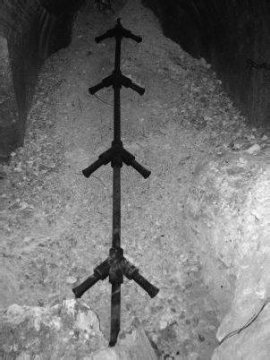
Прототип артиллерийско-ракетной системы «Фау-3»
Я назвал бы Бюлля одним из гениальнейших конструкторов ХХ века, хотя его вклад в мировую науку и технику не столь заметен, как, например, вклад инженеров-ракетчиков. Но те идеи, которые он выдвигал и с завидным упорством претворял в жизнь, уникальны и по своей сути, и по предложенным Бюллем решениям. Правда, судьба у бельгийца оказалась незавидной. Об этом я еще расскажу.
Однако вернемся к проекту HARP. Для проведения экспериментов Бюлль получил от американского флота старые корабельные орудия калибра 7 и 16 дюймов, и финансирование в размере 10 миллионов долларов. В ценах того времени это были довольно существенные средства. Орудия были установлены на острове Барбадос, а стрельбы велись в сторону Атлантического океана. К слову сказать, эти орудия, правда, здорово проржавевшие, можно и сегодня увидеть на этом карибском острове. Если кто-то соберется на Барбадос, рекомендую не пожалеть времени и посмотреть на эти памятники человеческой мысли.
Бюллем были разработаны несколько типов снарядов, которые отличались друг от друга по своему назначению и тактико-техническим характеристикам.
Первым появился «Мартлет-1», с помощью которого предполагалось оценить правильность выбранных технологических решений. Было произведено всего два выстрела из 16-дюймового орудия, после чего конструктор забыл о своих первенцах и начал работу над другими аппаратами. Именно аппаратами, а не снарядами, так как все «Мартлеты» были достаточно сложными конструкциями, сродни баллистическим ракетам. Снаряд «Мартлет-2» стал основным, на котором отрабатывались аэродинамика и баллистика. Его низкая себестоимость, всего 3 тысячи долларов, позволила провести большое количество экспериментов. В период с 1963 по 1967 год снаряд данного типа выстреливали около двухсот раз. При этом часто применялся выброс химических веществ, что позволяло проследить траекторию полета. Кроме того, на «Мартлет-2» были установлены многочисленные датчики, позволявшие отработать все элементы его конструкции.
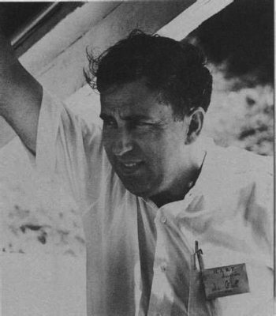
Джеральд Бюлль
В 1966 году был разработан еще один снаряд – «Мартлет-2G», который отличался от базовой модели большим количеством датчиков и теоретической возможностью достигать высоты до 200 километров за счет улучшенной аэродинамики и облегчения конструкции. Было произведено 12 выстрелов снарядом данного типа, но предельной высоты он никогда не достигал. Хотя и новый рекорд также впечатляет – 180 километров. Это уже был космос, к которому конструктор так стремился.
Таким образом, в период с 1962 по 1967 год «артиллерия Бюлля» стреляла более 200 раз. Однако в 1967 году испытания прекратились: развитие ракетной техники ослабило интерес американского военного ведомства к суперпушкам, да и отношения США и Канады из-за вьетнамской войны несколько испортились.
Так и остались неосуществленными грандиозные планы по созданию других снарядов серии «Мартлет», которые выдвинул Бюлль. Удалось лишь изготовить и испытать на стендах ряд новых моделей: «Мартлет-3А» – снаряд, оснащенный ракетным ускорителем и способный доставить полезный груз весом 18 килограмм на орбиту высотой до 500 километров; «Мартлет-3В» – модификация предыдущего варианта, в котором алюминиевый корпус заменялся стальным; «Мартлет-зD» – снаряд, предназначавшийся для суборбитальных полетов; «Мартлет-3Е» – снаряд для испытания орудий 7-дюймового калибра; «Мартлет-2G-l» – снаряд с ракетным ускорителем, позволявший при выстреле из 7-дюймовой пушки доставлять на околоземную орбиту грузы весом до 2 килограммов.
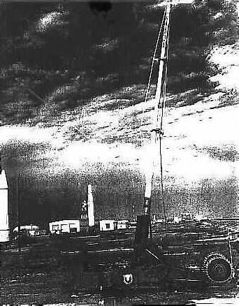
Артиллерийская система HARP-5 (5 дюймов)
Окончательной целью программы HARP должен был стать снаряд «Мартлет-4», который предполагалось снабдить двухступенчатым ракетным ускорителем и выводить с его помощью в космос грузы весом до 90 килограммов. Но, как было уже сказано, программу закрыли в 1967 году. Американских военных и сама идея перестала интересовать, да и все технические наработки проекта они посчитали ненужным хламом.
Однако Джеральд Бюлль так не считал и продолжил работу, приобретя у Пентагона все оборудование программы HARP. Им была создана компания «Спейс Ресерч Корпорэйшн», которая и занялась дальнейшими исследованиями. Доработанный снаряд «Мартлет-4» получил наименование – GLO-1B. Бюлль намеревался изготовить новое орудие для правительства Южной Африки, которой в ту пору управляло белое меньшинство и на которую распространялись санкции ООН. «Фанатичный исследователь, не имеющий никаких политических убеждений» – так характеризует Бюлля один из его приятелей. Изобретателю, действительно, было абсолютно все равно, на кого работать: на демократов или на республиканцев, если речь шла о США, на расистов, как это было в случае с Южной Африкой, на диктаторов, как это будет впоследствии с Ираком. Для него главным являлась возможность воплотить в жизнь его идею о достижении космоса с помощью артиллерийских орудий, а не ракет. Обычно говорят, что гений рождается раньше своего времени. Для Бюлля верно обратное – он родился слишком поздно. Начни он работать в начале ХХ века, вероятно, спрос на его идеи был бы иным. И тогда, кто знает, может быть, человечество вырвалось бы в космос сквозь ствол пушки, а не на ракете. Но это так, общие рассуждения.
Работы же в Южной Африке велись достаточно активно, и в газетах 1970-х годов можно было не раз встретить сообщения о том, что это суперорудие изготовлено, испытывалось и даже что-то доставляло в космос. Но все это окутано завесой секретности, и сегодня очень сложно выяснить, до какой стадии дошли работы. А в 1980 году бельгиец был арестован и осужден в США на шесть месяцев тюрьмы за незаконную торговлю оружием.
Отсидев положенный срок, в 1982 году Бюлль переселился в Бельгию. Он вновь стал продавать свои побочные (конструктор считал их мелкими в сравнении со своим главным замыслом) разработки по усовершенствованию традиционной артиллерийской техники через филиалы в Южной Африке, Швейцарии, Испании, Чили. И хотя за ним давно уже наблюдали секретные службы многих стран, натовские эксперты были поражены, узнав, что южноафриканская компания по производству оружия «Армскор» начала экспортировать гаубицы калибром 20,3 сантиметра, которые намного превосходили в дальности и точности поражения все виды ствольной артиллерии НАТО. Их создателем оказался не кто иной как Бюлль.
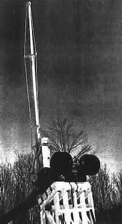
Артиллерийская система HARP-7 (7 дюймов)
А в 1985 году (по другим данным на год позже) бельгиец был принят на службу иракским правительством на должность советника по вооружениям. Заниматься он намеревался все тем же – созданием суперорудий. Правда, заказчику, которым являлся Саддам Хусейн, в первую очередь нужно было мощное и дальнобойное орудие, с помощью которого он мог бы держать в страхе большую часть Ближнего и Среднего Востока. Ну а космос шел как бесплатное приложение. Проекту придумали скромное название «Большой Вавилон». Он предусматривал строительство орудия с диаметром ствола 1 метр и действующего прототипа со стволом диаметром 35 сантиметров. При этом пассивные снаряды могли выстреливаться на дальность до 1000 километров, а активно-реактивные – на дальность до 2000 километров. Также можно было вывести на околоземную орбиту груз весом до 200 килограммов.
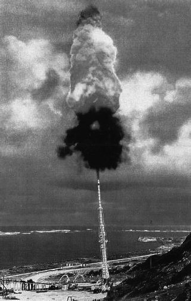
Артиллерийская система HARP-16 (16 дюймов)
Построить эту суперпушку Бюллю так и не удалось. Основные узлы «Большого Вавилона», которые под видом оборудования для нефтедобычи направлялись из Европы в Ирак, задержали английские таможенники. А сам Джеральд Бюлль получил предупреждение от ЦРУ, но отказался разрывать контракт с Ираком, поэтому нет ничего странного в том, что 22 марта 1990 года в Брюсселе его застрелили. Убийца всадил в инженера пять пуль, после чего скрылся. Преступление так и не было раскрыто, но нетрудно догадаться, кто был заказчиком.
Со смертью Бюлля интерес к орудиям как средству войны или выведения небольших военных грузов на околоземные орбиты не угас. Хотя нет уже былого энтузиазма, нет и ярких изобретений, о которых можно было бы написать.
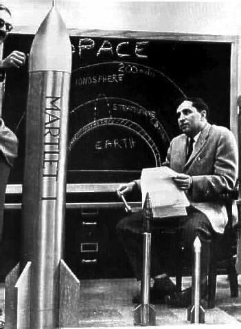
Снаряд «Марлет-1»
Работы над сверхдальнобойными пушками продолжаются в Китае. Но речь о космосе в этих работах не идет. Китайцы хотят создать артиллерию для обстрела непокорного Тайваня.
В середине 1990-х годов в США попытались возродить идею об использовании орудий для дешевого вывода на орбиту небольших спутников. Проект Ливерморской лаборатории получил наименование SHARP (Super High Altitude Research Project – проект легкогазовой пушки для научных исследований на сверхбольших высотах). Однако чтобы перейти от лабораторных исследований к экспериментам требовался миллиард долларов, который найти не удалось.
В начале XXI века в США была запатентована система «Блэй-драннер», которая должна вдвое снизить стоимость космических запусков по сравнению даже с самыми дешевыми. Эта система представляет собой большую пневматическую пушку, которая должна быть установлена на специально оборудованном для подобных запусков транспортном самолете. Старт должен осуществляться с высоты около 11 километров. Несмотря на оптимизм конструкторов, которые намеревались ввести систему в эксплуатацию уже в 2005 году, работы продвигаются очень медленно и конца им не видно.
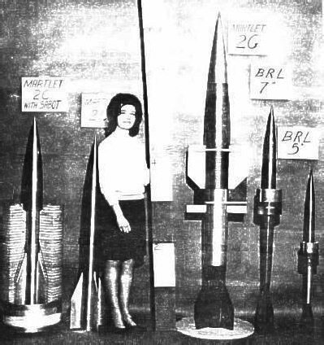
Семейство «Марлетов»
А теперь я хочу вернуться к тому, с чего начал – к жюльвер-новским мечтаниям о полете на Луну. Жизнь показала, что это не самый лучший и не самый простой способ межпланетных путешествий – огромные перегрузки, отсутствие возможности для маневра и так далее. Но как способ запуска небольших космических аппаратов использовать пушки вполне реально. Тем более что он отличается от ракет своей дешевизной и простотой, то есть тем, к чему так стремятся все ведущие космические державы мира.
А как же Луна? На наше счастье, она никуда не денется, будучи вечной спутницей нашей планеты. И человек обязательно вернется на ее поверхность. А каким способом это произойдет, на ракете или из пушки, не так уж и важно.